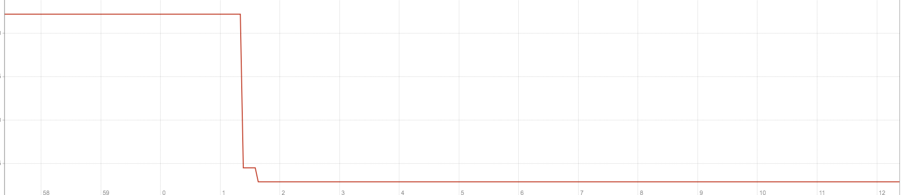
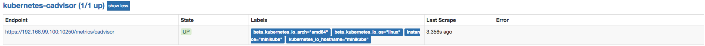
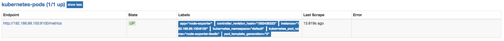

使用Prometheus监控Kubernetes集群
上一小节中，我们介绍了Prometheus在Kubernetes下的服务发现能力，并且通过kubernetes_sd_config实现了对Kubernetes下各类资源的自动发现。在本小节中，我们将带领读者利用Promethues提供的服务发现能力，实现对Kubernetes集群以及其中部署的各类资源的自动化监控。
下表中，梳理了监控Kubernetes集群监控的各个维度以及策略：
| 目标 | 服务发现模式 | 监控方法 | 数据源 |
|---|---|---|---|
| 从集群各节点kubelet组件中获取节点kubelet的基本运行状态的监控指标 | node | 白盒监控 | kubelet |
| 从集群各节点kubelet内置的cAdvisor中获取，节点中运行的容器的监控指标 | node | 白盒监控 | kubelet |
| 从部署到各个节点的Node Exporter中采集主机资源相关的运行资源 | node | 白盒监控 | node exporter |
| 对于内置了Prometheus支持的应用，需要从Pod实例中采集其自定义监控指标 | pod | 白盒监控 | custom pod |
| 获取API Server组件的访问地址，并从中获取Kubernetes集群相关的运行监控指标 | endpoints | 白盒监控 | api server |
| 获取集群中Service的访问地址，并通过Blackbox Exporter获取网络探测指标 | service | 黑盒监控 | blackbox exporter |
| 获取集群中Ingress的访问信息，并通过Blackbox Exporter获取网络探测指标 | ingress | 黑盒监控 | blackbox exporter |
从Kubelet获取节点运行状态
Kubelet组件运行在Kubernetes集群的各个节点中，其负责维护和管理节点上Pod的运行状态。kubelet组件的正常运行直接关系到该节点是否能够正常的被Kubernetes集群正常使用。
基于Node模式，Prometheus会自动发现Kubernetes中所有Node节点的信息并作为监控的目标Target。 而这些Target的访问地址实际上就是Kubelet的访问地址，并且Kubelet实际上直接内置了对Prometheus的支持。
修改prometheus.yml配置文件，并添加以下采集任务配置：
- job_name: 'kubernetes-kubelet'
scheme: https
tls_config:
ca_file: /var/run/secrets/kubernetes.io/serviceaccount/ca.crt
bearer_token_file: /var/run/secrets/kubernetes.io/serviceaccount/token
kubernetes_sd_configs:
- role: node
relabel_configs:
- action: labelmap
regex: __meta_kubernetes_node_label_(.+)
这里使用Node模式自动发现集群中所有Kubelet作为监控的数据采集目标，同时通过labelmap步骤，将Node节点上的标签，作为样本的标签保存到时间序列当中。
重新加载promethues配置文件，并重建Prometheus的Pod实例后，查看kubernetes-kubelet任务采集状态，我们会看到以下错误提示信息：
Get https://192.168.99.100:10250/metrics: x509: cannot validate certificate for 192.168.99.100 because it doesn't contain any IP SANs
这是由于当前使用的ca证书中，并不包含192.168.99.100的地址信息。为了解决该问题，第一种方法是直接跳过ca证书校验过程，通过在tls_config中设置 insecure_skip_verify为true即可。 这样Prometheus在采集样本数据时，将会自动跳过ca证书的校验过程，从而从kubelet采集到监控数据：
- job_name: 'kubernetes-kubelet'
scheme: https
tls_config:
ca_file: /var/run/secrets/kubernetes.io/serviceaccount/ca.crt
insecure_skip_verify: true
bearer_token_file: /var/run/secrets/kubernetes.io/serviceaccount/token
kubernetes_sd_configs:
- role: node
relabel_configs:
- action: labelmap
regex: __meta_kubernetes_node_label_(.+)

第二种方式，不直接通过kubelet的metrics服务采集监控数据，而通过Kubernetes的api-server提供的代理API访问各个节点中kubelet的metrics服务，如下所示：
- job_name: 'kubernetes-kubelet'
scheme: https
tls_config:
ca_file: /var/run/secrets/kubernetes.io/serviceaccount/ca.crt
bearer_token_file: /var/run/secrets/kubernetes.io/serviceaccount/token
kubernetes_sd_configs:
- role: node
relabel_configs:
- action: labelmap
regex: __meta_kubernetes_node_label_(.+)
- target_label: __address__
replacement: kubernetes.default.svc:443
- source_labels: [__meta_kubernetes_node_name]
regex: (.+)
target_label: __metrics_path__
replacement: /api/v1/nodes/${1}/proxy/metrics
通过relabeling，将从Kubernetes获取到的默认地址__address__替换为kubernetes.default.svc:443。同时将__metrics_path__替换为api-server的代理地址/api/v1/nodes/${1}/proxy/metrics。

通过获取各个节点中kubelet的监控指标，用户可以评估集群中各节点的性能表现。例如,通过指标kubelet_pod_start_latency_microseconds可以获得当前节点中Pod启动时间相关的统计数据。
kubelet_pod_start_latency_microseconds{quantile="0.99"}

Pod平均启动时间大致为42s左右（包含镜像下载时间）：
kubelet_pod_start_latency_microseconds_sum / kubelet_pod_start_latency_microseconds_count

除此以外，监控指标kubelet_docker_*还可以体现出kubelet与当前节点的docker服务的调用情况，从而可以反映出docker本身是否会影响kubelet的性能表现等问题。
从Kubelet获取节点容器资源使用情况
各节点的kubelet组件中除了包含自身的监控指标信息以外，kubelet组件还内置了对cAdvisor的支持。cAdvisor能够获取当前节点上运行的所有容器的资源使用情况，通过访问kubelet的/metrics/cadvisor地址可以获取到cadvisor的监控指标，因此和获取kubelet监控指标类似，这里同样通过node模式自动发现所有的kubelet信息，并通过适当的relabel过程，修改监控采集任务的配置。 与采集kubelet自身监控指标相似，这里也有两种方式采集cadvisor中的监控指标：
方式一：直接访问kubelet的/metrics/cadvisor地址，需要跳过ca证书认证：
- job_name: 'kubernetes-cadvisor'
scheme: https
tls_config:
ca_file: /var/run/secrets/kubernetes.io/serviceaccount/ca.crt
insecure_skip_verify: true
bearer_token_file: /var/run/secrets/kubernetes.io/serviceaccount/token
kubernetes_sd_configs:
- role: node
relabel_configs:
- source_labels: [__meta_kubernetes_node_name]
regex: (.+)
target_label: __metrics_path__
replacement: metrics/cadvisor
- action: labelmap
regex: __meta_kubernetes_node_label_(.+)

方式二：通过api-server提供的代理地址访问kubelet的/metrics/cadvisor地址：
- job_name: 'kubernetes-cadvisor'
scheme: https
tls_config:
ca_file: /var/run/secrets/kubernetes.io/serviceaccount/ca.crt
bearer_token_file: /var/run/secrets/kubernetes.io/serviceaccount/token
kubernetes_sd_configs:
- role: node
relabel_configs:
- target_label: __address__
replacement: kubernetes.default.svc:443
- source_labels: [__meta_kubernetes_node_name]
regex: (.+)
target_label: __metrics_path__
replacement: /api/v1/nodes/${1}/proxy/metrics/cadvisor
- action: labelmap
regex: __meta_kubernetes_node_label_(.+)

使用NodeExporter监控集群资源使用情况
为了能够采集集群中各个节点的资源使用情况，我们需要在各节点中部署一个Node Exporter实例。在本章的“部署Prometheus”小节，我们使用了Kubernetes内置的控制器之一Deployment。Deployment能够确保Prometheus的Pod能够按照预期的状态在集群中运行，而Pod实例可能随机运行在任意节点上。而与Prometheus的部署不同的是，对于Node Exporter而言每个节点只需要运行一个唯一的实例，此时，就需要使用Kubernetes的另外一种控制器Daemonset。顾名思义，Daemonset的管理方式类似于操作系统中的守护进程。Daemonset会确保在集群中所有（也可以指定）节点上运行一个唯一的Pod实例。
创建node-exporter-daemonset.yml文件，并写入以下内容：
apiVersion: extensions/v1beta1
kind: DaemonSet
metadata:
name: node-exporter
spec:
template:
metadata:
annotations:
prometheus.io/scrape: 'true'
prometheus.io/port: '9100'
prometheus.io/path: 'metrics'
labels:
app: node-exporter
name: node-exporter
spec:
containers:
- image: prom/node-exporter
imagePullPolicy: IfNotPresent
name: node-exporter
ports:
- containerPort: 9100
hostPort: 9100
name: scrape
hostNetwork: true
hostPID: true
由于Node Exporter需要能够访问宿主机，因此这里指定了hostNetwork和hostPID，让Pod实例能够以主机网络以及系统进程的形式运行。同时YAML文件中也创建了NodeExporter相应的Service。这样通过Service就可以访问到对应的NodeExporter实例。
$ kubectl create -f node-exporter-daemonset.yml
service "node-exporter" created
daemonset "node-exporter" created
查看Daemonset以及Pod的运行状态
$ kubectl get daemonsets
NAME DESIRED CURRENT READY UP-TO-DATE AVAILABLE NODE SELECTOR AGE
node-exporter 1 1 1 1 1 <none> 15s
$ kubectl get pods
NAME READY STATUS RESTARTS AGE
...
node-exporter-9h56z 1/1 Running 0 51s
由于Node Exporter是以主机网络的形式运行，因此直接访问MiniKube的虚拟机IP加上Pod的端口即可访问当前节点上运行的Node Exporter实例:
$ minikube ip
192.168.99.100
$ curl http://192.168.99.100:9100/metrics
...
process_start_time_seconds 1.5251401593e+09
# HELP process_virtual_memory_bytes Virtual memory size in bytes.
# TYPE process_virtual_memory_bytes gauge
process_virtual_memory_bytes 1.1984896e+08
目前为止，通过Daemonset的形式将Node Exporter部署到了集群中的各个节点中。接下来，我们只需要通过Prometheus的pod服务发现模式，找到当前集群中部署的Node Exporter实例即可。 需要注意的是，由于Kubernetes中并非所有的Pod都提供了对Prometheus的支持，有些可能只是一些简单的用户应用，为了区分哪些Pod实例是可以供Prometheus进行采集的，这里我们为Node Exporter添加了注解：
prometheus.io/scrape: 'true'
由于Kubernetes中Pod可能会包含多个容器，还需要用户通过注解指定用户提供监控指标的采集端口：
prometheus.io/port: '9100'
而有些情况下，Pod中的容器可能并没有使用默认的/metrics作为监控采集路径，因此还需要支持用户指定采集路径：
prometheus.io/path: 'metrics'
为Prometheus创建监控采集任务kubernetes-pods，如下所示：
- job_name: 'kubernetes-pods'
kubernetes_sd_configs:
- role: pod
relabel_configs:
- source_labels: [__meta_kubernetes_pod_annotation_prometheus_io_scrape]
action: keep
regex: true
- source_labels: [__meta_kubernetes_pod_annotation_prometheus_io_path]
action: replace
target_label: __metrics_path__
regex: (.+)
- source_labels: [__address__, __meta_kubernetes_pod_annotation_prometheus_io_port]
action: replace
regex: ([^:]+)(?::\d+)?;(\d+)
replacement: $1:$2
target_label: __address__
- action: labelmap
regex: __meta_kubernetes_pod_label_(.+)
- source_labels: [__meta_kubernetes_namespace]
action: replace
target_label: kubernetes_namespace
- source_labels: [__meta_kubernetes_pod_name]
action: replace
target_label: kubernetes_pod_name

通过以上relabel过程实现对Pod实例的过滤，以及采集任务地址替换，从而实现对特定Pod实例监控指标的采集。需要说明的是kubernetes-pods并不是只针对Node Exporter而言，对于用户任意部署的Pod实例，只要其提供了对Prometheus的支持，用户都可以通过为Pod添加注解的形式为其添加监控指标采集的支持。
从kube-apiserver获取集群运行监控指标
在开始正式内容之前，我们需要先了解一下Kubernetes中Service是如何实现负载均衡的，如下图所示，一般来说Service有两个主要的使用场景：

- 代理对集群内部应用Pod实例的请求：当创建Service时如果指定了标签选择器，Kubernetes会监听集群中所有的Pod变化情况，通过Endpoints自动维护满足标签选择器的Pod实例的访问信息；
- 代理对集群外部服务的请求：当创建Service时如果不指定任何的标签选择器，此时需要用户手动创建Service对应的Endpoint资源。例如，一般来说，为了确保数据的安全，我们通常讲数据库服务部署到集群外。 这是为了避免集群内的应用硬编码数据库的访问信息，这是就可以通过在集群内创建Service，并指向外部的数据库服务实例。
kube-apiserver扮演了整个Kubernetes集群管理的入口的角色，负责对外暴露Kubernetes API。kube-apiserver组件一般是独立部署在集群外的，为了能够让部署在集群内的应用（kubernetes插件或者用户应用）能够与kube-apiserver交互，Kubernetes会默认在命名空间下创建一个名为kubernetes的服务，如下所示：
$ kubectl get svc kubernetes -o wide
NAME TYPE CLUSTER-IP EXTERNAL-IP PORT(S) AGE SELECTOR
kubernetes ClusterIP 10.96.0.1 <none> 443/TCP 166d <none>
而该kubernetes服务代理的后端实际地址通过endpoints进行维护，如下所示：
$ kubectl get endpoints kubernetes
NAME ENDPOINTS AGE
kubernetes 10.0.2.15:8443 166d
通过这种方式集群内的应用或者系统主机就可以通过集群内部的DNS域名kubernetes.default.svc访问到部署外部的kube-apiserver实例。
因此，如果我们想要监控kube-apiserver相关的指标，只需要通过endpoints资源找到kubernetes对应的所有后端地址即可。
如下所示，创建监控任务kubernetes-apiservers，这里指定了服务发现模式为endpoints。Prometheus会查找当前集群中所有的endpoints配置，并通过relabel进行判断是否为apiserver对应的访问地址：
- job_name: 'kubernetes-apiservers'
kubernetes_sd_configs:
- role: endpoints
scheme: https
tls_config:
ca_file: /var/run/secrets/kubernetes.io/serviceaccount/ca.crt
bearer_token_file: /var/run/secrets/kubernetes.io/serviceaccount/token
relabel_configs:
- source_labels: [__meta_kubernetes_namespace, __meta_kubernetes_service_name, __meta_kubernetes_endpoint_port_name]
action: keep
regex: default;kubernetes;https
- target_label: __address__
replacement: kubernetes.default.svc:443
在relabel_configs配置中第一步用于判断当前endpoints是否为kube-apiserver对用的地址。第二步，替换监控采集地址到kubernetes.default.svc:443即可。重新加载配置文件，重建Prometheus实例，得到以下结果。

对Ingress和Service进行网络探测
为了能够对Ingress和Service进行探测，我们需要在集群部署Blackbox Exporter实例。 如下所示，创建blackbox-exporter.yaml用于描述部署相关的内容:
apiVersion: v1
kind: Service
metadata:
labels:
app: blackbox-exporter
name: blackbox-exporter
spec:
ports:
- name: blackbox
port: 9115
protocol: TCP
selector:
app: blackbox-exporter
type: ClusterIP
---
apiVersion: extensions/v1beta1
kind: Deployment
metadata:
labels:
app: blackbox-exporter
name: blackbox-exporter
spec:
replicas: 1
selector:
matchLabels:
app: blackbox-exporter
template:
metadata:
labels:
app: blackbox-exporter
spec:
containers:
- image: prom/blackbox-exporter
imagePullPolicy: IfNotPresent
name: blackbox-exporter
通过kubectl命令部署Blackbox Exporter实例，这里将部署一个Blackbox Exporter的Pod实例，同时通过服务blackbox-exporter在集群内暴露访问地址blackbox-exporter.default.svc.cluster.local，对于集群内的任意服务都可以通过该内部DNS域名访问Blackbox Exporter实例：
$ kubectl get pods
NAME READY STATUS RESTARTS AGE
blackbox-exporter-f77fc78b6-72bl5 1/1 Running 0 4s
$ kubectl get svc
NAME TYPE CLUSTER-IP EXTERNAL-IP PORT(S) AGE
blackbox-exporter ClusterIP 10.109.144.192 <none> 9115/TCP 3m
为了能够让Prometheus能够自动的对Service进行探测，我们需要通过服务发现自动找到所有的Service信息。 如下所示，在Prometheus的配置文件中添加名为kubernetes-services的监控采集任务：
- job_name: 'kubernetes-services'
metrics_path: /probe
params:
module: [http_2xx]
kubernetes_sd_configs:
- role: service
relabel_configs:
- source_labels: [__meta_kubernetes_service_annotation_prometheus_io_probe]
action: keep
regex: true
- source_labels: [__address__]
target_label: __param_target
- target_label: __address__
replacement: blackbox-exporter.default.svc.cluster.local:9115
- source_labels: [__param_target]
target_label: instance
- action: labelmap
regex: __meta_kubernetes_service_label_(.+)
- source_labels: [__meta_kubernetes_namespace]
target_label: kubernetes_namespace
- source_labels: [__meta_kubernetes_service_name]
target_label: kubernetes_name
在该任务配置中，通过指定kubernetes_sd_config的role为service指定服务发现模式：
kubernetes_sd_configs:
- role: service
为了区分集群中需要进行探测的Service实例，我们通过标签‘prometheus.io/probe: true’进行判断，从而过滤出需要探测的所有Service实例：
- source_labels: [__meta_kubernetes_service_annotation_prometheus_io_probe]
action: keep
regex: true
并且将通过服务发现获取到的Service实例地址__address__转换为获取监控数据的请求参数。同时将__address执行Blackbox Exporter实例的访问地址，并且重写了标签instance的内容：
- source_labels: [__address__]
target_label: __param_target
- target_label: __address__
replacement: blackbox-exporter.default.svc.cluster.local:9115
- source_labels: [__param_target]
target_label: instance
最后，为监控样本添加了额外的标签信息：
- action: labelmap
regex: __meta_kubernetes_service_label_(.+)
- source_labels: [__meta_kubernetes_namespace]
target_label: kubernetes_namespace
- source_labels: [__meta_kubernetes_service_name]
target_label: kubernetes_name
对于Ingress而言，也是一个相对类似的过程，这里给出对Ingress探测的Prometheus任务配置作为参考：
- job_name: 'kubernetes-ingresses'
metrics_path: /probe
params:
module: [http_2xx]
kubernetes_sd_configs:
- role: ingress
relabel_configs:
- source_labels: [__meta_kubernetes_ingress_annotation_prometheus_io_probe]
action: keep
regex: true
- source_labels: [__meta_kubernetes_ingress_scheme,__address__,__meta_kubernetes_ingress_path]
regex: (.+);(.+);(.+)
replacement: ${1}://${2}${3}
target_label: __param_target
- target_label: __address__
replacement: blackbox-exporter.default.svc.cluster.local:9115
- source_labels: [__param_target]
target_label: instance
- action: labelmap
regex: __meta_kubernetes_ingress_label_(.+)
- source_labels: [__meta_kubernetes_namespace]
target_label: kubernetes_namespace
- source_labels: [__meta_kubernetes_ingress_name]
target_label: kubernetes_name